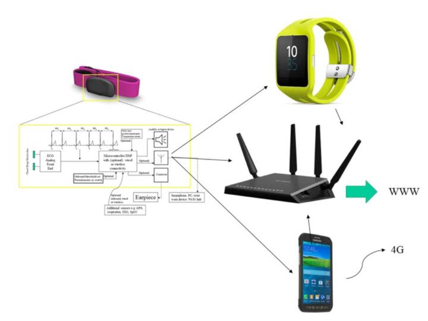

Who We Are
Autonomic Systems LLC (ANS) is an Arizona-based company focused on innovating and developing unique systems solutions in the application of heart rate variability (HRV) for athletic performance, lifestyle enhancement, and chronic illness management.
Patent space: Our non-provisional USPTO patent (view here) is part of a substantial portfolio providing innovation for the next generation of wearables -- for alerting people to imminent, real time changes in their physiological condition.
Currently, the company is developing expertise around the application of heart rate variability (HRV) in a way that can provide real-time alerting about changes in a user’s physiological condition. Academic studies have shown that HRV can be applied across many different fields, including allergies, sleep apnea, epilepsy, stress and anxiety, as well as, athletic applications such as the detection of anaerobic threshold. On a clinical level, HRV can be used to alert the user to changes in their health and physiological status. For non-clinical applications, such as during endurance sports, athletes can use HRV to help examine their lactate threshold and other cardiovascular health parameters to help maximize efficiency, performance, and recovery.
Wearable technology has been developed by ANS that can be incorporated into chest straps, patches, garments, and many other variations of wearable devices. Our hardware utilizes ultra-low power components to ensure an extended battery life, and the use of low energy Bluetooth for remote real-time alerting. Proprietary algorithms have been developed to handle special use cases and to tease out the nuances of the HRV output reading.
Our Innovation
"With ANS, the opportunity to address next generation wearable tech and fill unmet needs in personal medical devices provided the impetus to conceive and develop intellectual property and prototypes in these rapidly growing areas.
Recognizing these future needs, we researched and developed foundational concepts for personal, wearable, monitoring technology that provides a platform for reducing the cost of chronic illness care and for delivering highly integrated, personalized feedback for health and wellness. In founding ANS, we own a foundational intellectual property position and a strategic product roadmap for the crossing of technology and healthy living."
- Rodney Kugizaki
